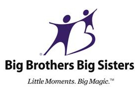
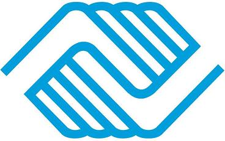
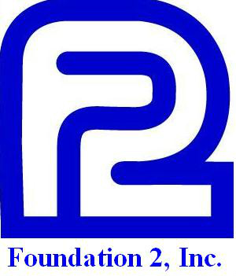
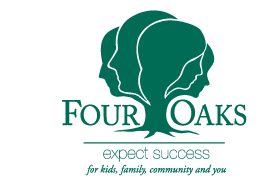
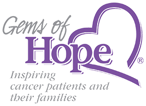
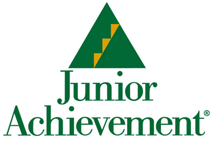
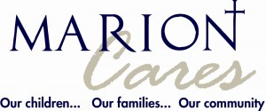
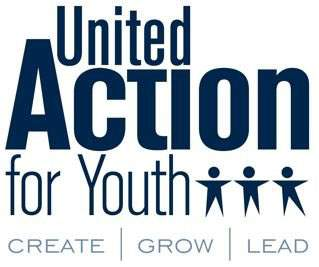
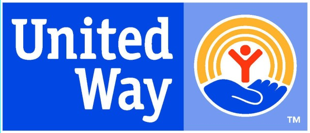

This week in the world of me2
It has been an honor to the me2 team and I that we have had the opportunity to meet so many amazing organizations who are changing the lives or kids/teens every single day. Dedicating their lives to make the lives of young people more enjoyable. The me2 team is trying to accomplish just that so meeting all of these amazing organizations is truly inspiring. I would love to introduce you to some of them.
Organizations who are changing the lives of kids every day.
Over the past few months, the me2 team has sat down and met with dozens of parents, mentors, life coaches, schools, counselors, and youth organizations with everyone having one thing in common: they help improve the lives of kids. When we first started out on creating me2 we figured that there were a small handful of youth organizations in the area helping maybe a few hundred kids a year. After sitting down with many of them we quickly found out we were completely wrong!
Meeting these organizations consisting of individuals who dedicate their lives to helping kids live a better life has made us want to work even harder each day. I have caught myself many times calling up friends and family after leaving a meeting with a youth organization just to tell them about how blown away I am with their organization. I am so proud of these organizations and it excites us to join into this industry trying our best to change the lives of kids ourselves. Here are some of those groups we have met so far.*
*Note: this list consists of youth organizations we have talked to up to this date in just Cedar Rapids/Iowa City. There are many more great organizations out there to discover. Want to share them with us?
Let me introduce you to...

Big Brothers and Big Sisters of Johnson County is designed to provide one-on-one mentorship between a child and a trusted adult/couple to build a relationship together. This local organization is a branch of the national Big Brothers Big Sisters foundation. Big Brothers Big Sisters pairs a child (aka a "little") with an adult (or adult couple) volunteer (aka a "big") where they do activities together such as go to a movie or take a walk at a park. It is designed to give a child who may not have the best home life, support system, parents, or family to have an adult that they can build a relationship with and have someone to trust.
I am so in love with this organization after meeting with one of the directors as well as two of their "big" volunteers. They shared with us stories of young kids coming into the program not knowing what to expect to those same kids having their "big" volunteer be a part of their wedding party 10 years after first meeting each other. They say all it takes is one trusted adult to change the life of a child. Big Brothers Big Sisters gives you the opportunity to be that one friend to make a big difference to a child's life.

Boys and Girls Club of Cedar Rapids is a youth program providing many different programs to hundreds of kids on a daily basis in Cedar Rapids alone. Like Big Brothers Big Sisters, this is a local branch of the national Boys and Girls Club organization. The Boys and Girls Club of Cedar Rapids helps develop youth in many disciplies such as health, wellness, career development, leadership, the arts as well as providing programs to feed the youth if hungry.
We met the Boys and Girls Club of Cedar Rapids a while back right after we completed Startup Weekend Iowa City when our journey began. They have been there for me2 every step of the way through personal ties that a couple of the me2 team members have with the organization. Every time that we meet with Boys and Girls Club, we see the passion and drive in every one of the representatives eyes as they share experiences with us in their organization. They are improving the lives for hundreds of kids in the area every single day like they have done for decades. Truly an inspiration to say the least.

Foundation 2 is a local counseling hotline (and much more) here in Cedar Rapids that runs an amazing program that truly saves lives. Foundation 2 provides counseling, a suicide hotline, a youth shelter abnd support groups creating a live saving experience.
We got in contact with Foundation 2 early on in our journey as a elementary school counselor we met late last year used to work at the Foundation 2 hotline service. Since then, we have met other members of this amazing organization where everyone there is warm hearted and extremely helpful. At first we heard they provide a hotline and we thought that was great. Then after meeting them, we soon found out they do much much more then just that!

Four Oaks is an Iowa based non-profit organization providing child welfare, juvenile justice, and behavioral health programs to around 14,000 kids annually throughtout the state. Four Oaks sees success in every child that they serve and does their very best in helping them in any way they see possible.
I met with a Four Oaks representative early on in our Venture School experience where they shared with me all of the programs they offer at the many locations around the state with an extra emphasis on the foster care programs they provide. I personally have a connection with adoption and Four Oaks and I cannot thank them enough for the expertise they offer to young people going through this uncomfortable life experience. They provide many encouraging programs for children going through hard times at home you can feel comfortable going to when you need it.

Gems of Hope provides emotional support to cancer patients and their families. Started by a cancer patient herself along with friends, Gems of Hope provides inspiration to cancer patients and their families through workshops and gifts. Meeting with Gems of Hope has been a wonderful experience as they are a unique group with expertise in cancer support. Starting out as just 3 friends, Gems of Hope has grown to include a large handful of members and volunteers logging tens of thousands of hours of volunteer hours annually.
I have personal ties to families affected by cancer and I know I am not alone. Gems of Hope takes a very positive and enlightening approach to their support by providing support through various gifts such as bookmarks and cards with a gem on it (hence the name "Gems" of Hope). Sometimes all it takes is a little distracting inspiration to make it through a tough time.
Girl Scouts of Eastern Iowa and Western Illinois consists of 19,000 girls and 5,000 volunteers to raise another generation of leaders. In every student that the Girl Scouts works with is an energized girl ready to take on the world.
When we met with a representative from Girl Scouts of Eastern Iowa and Western Illinois, we were handed a thick booklet (as well as cookies and chocolate covered raisins but that is besides the point) consisting of hundreds of programs offered to their thousands of girl scout members. Talk about blown away!
It sickens me to see young boys and girls who do not have the best support system in their lives. If there is no one out there to show you your true potential, the chances of you discovering your true abilities is slim to none. We cannot thank the Girl Scouts organization enough for showing young girls they can take on the world and be the next President, software engineer, entrepreneur, or whatever their goals might be.

Junior Achievement or Eastern Iowa specializes in providing programs to students K-12 helping them to be successful in today's economy. Whether that be economics, personal and business expenses, or even entrepreneurial programs.
A couple of us met with Junior Achievement early on in our Venture School experience. Programs like Junior Achievement are so important to young people because well, I am graduated out of college living on my own and I don't quite know myself how to do some of the financial topics that this program teaches. The topics they teach are very important to everyone that you simply need to know how it all works. I sure wish I had this program available to me while going through school.

Marion Cares provides services that address academics and poverty as well as family, social, and spiritual needs. Marion Cares treats children with various needs to gain success through faith.
The Marion Cares representive we sat with had lots of great tips to share with us about their experiences with emotional healing. Hearing from a parent and someone living a life filled with faith was very important to us because we know that faith is important to many young people growing up to help them gain happiness. Having some of that insight through Marion Cares has been a gift to us we truly appreciate!

United Actions for Youth (aka UAY) has a vision where young people and adults work together in partnership to create a safe and healthy community. They are located downtown Iowa City where they provide a recreational center for kids/teens to come and build friendships together around the arts.
UAY gives me so much excitment every time I have the chance to talk about them because of the approach they take helping kids. Their center has a fully equipted recoring studio with a line of instruments where anyone can come in and have a jam session or even record an album. Along with this, they have an art studio loaded with every art supply you can imagine. They also provide some computers, couches, video games, and more to create a fun and energetic place to have fun together. Anytime that you feel stuck and you need somewhere to go to find a friend to talk to, UAY can hook you up.

United Way of East Central Iowa is a local branch of the United Way national foundation where they focus on giving young people experiences to gain leadership, relationsihps, service, and learn a great deal along the way. United Way is the latest organization we have connected with and we are excited to work with them more in the future.
United Way is special to me because they work as hard as they can to teach kids lessons from the ground up. They teach kids lessons that are proven to work. This is special to me because I feel education is something that can be done very well and not so well and United Way seems to be doing a great job educating youth every day. I look forward to working with the United Way foundation in the future helping kids succeed.
Thank you!!!
All of these wonderful organizations we have met with all deliver a positive life changing experience to young people. We find it a true honor to enter into this industry with these organizations that help tens of thousands of kids a year. They are helping to make a nation of happy kids just like we are and we are so proud of all of them! Thank you for all you do!!!
Every young person struggles at some point in life. We are here to say #me2. You are not alone. @me2nation
Twitter
Instagram
Facebook
Website
Blog